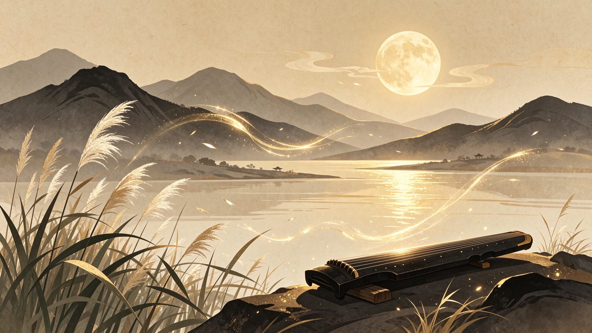
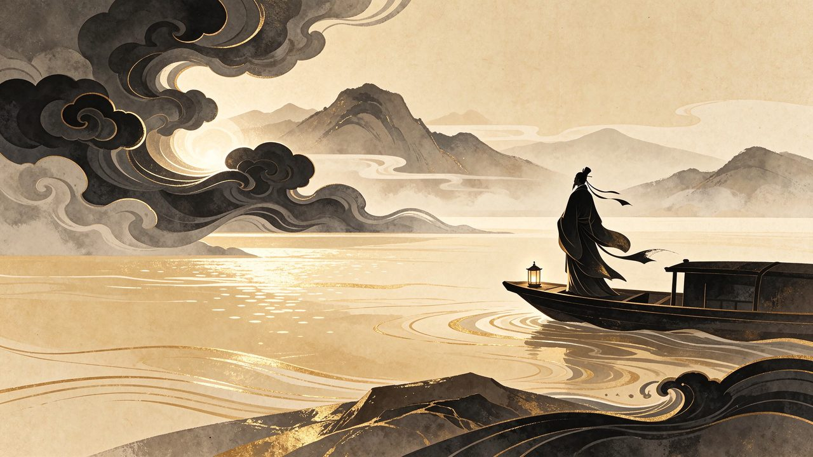
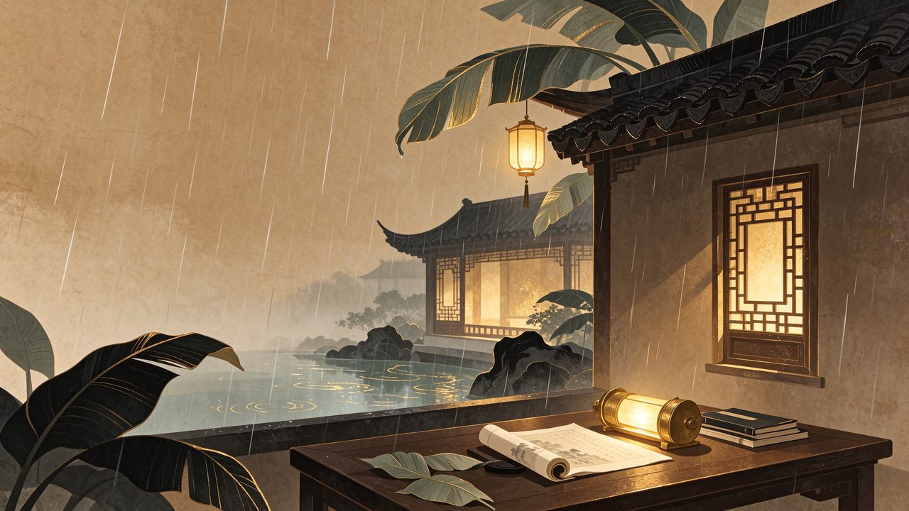

诗歌与文学 · 经典精读
诗经楚辞唐诗莎士比亚有些句子，穿过一千年，仍然能击中你今天的心。我们读诗，不是为了考试，是为了在艰难的日子里，仍然有一句话能救自己。
“蒹葭苍苍，白露为霜。所谓伊人，在水一方。”求而不得，是中国人最早写下的情感原型。诗经不只有风花雪月，还有劳作、战争、宴饮与底层人的哭声——它是一部用歌谣写成的社会史。
屈原把神话、香草、政治与个人命运熔成一种全新的诗体。楚辞不是温柔的低吟，而是带着血性的追问：当世界浑浊，一个人还要不要坚持清洁？两千年来，它一直是失意者的火把。

唐诗是中国人共同的情感词典：李白的豪迈、杜甫的沉郁、王维的空灵、白居易的平易。短短二十个字，能装下一整座长安、一场离别、一生的漂泊。它教会我们：最深的情绪，可以用最少的字。

词比诗更接近日常：酒醒、梦回、离别、登楼。苏轼把苦难写成旷达，李清照把孤独写成细雨，辛弃疾把不甘写成刀锋。宋词告诉我们，人可以一边受伤，一边把日子过下去。
元曲把诗词从士大夫的书房带到勾栏瓦舍。它更口语、更泼辣、更接地气，写尽小人物、市井、离别与不甘。高雅文学向下走了一步，反而获得了更长的生命力。

解锁你将获得：第 6-8 课完整内容（莎士比亚、泰戈尔、诗歌与救赎）+ 全部 9 个互动游戏 + 全部 9 枚徽章。
本书出自「熙祺智书」文学经典专题。配套阅读：《诗经》《楚辞》《唐诗三百首》《莎士比亚十四行诗》。